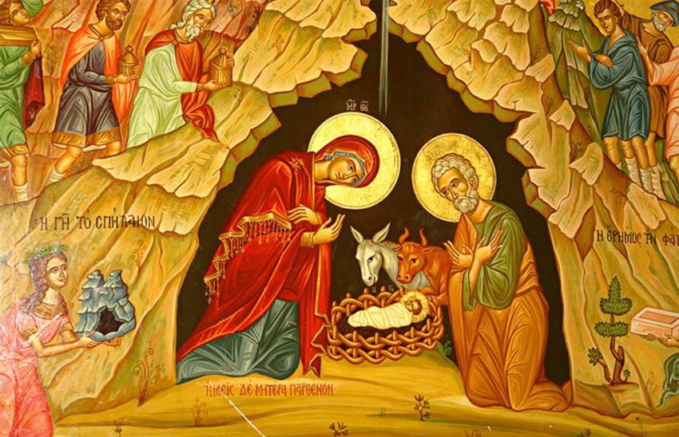
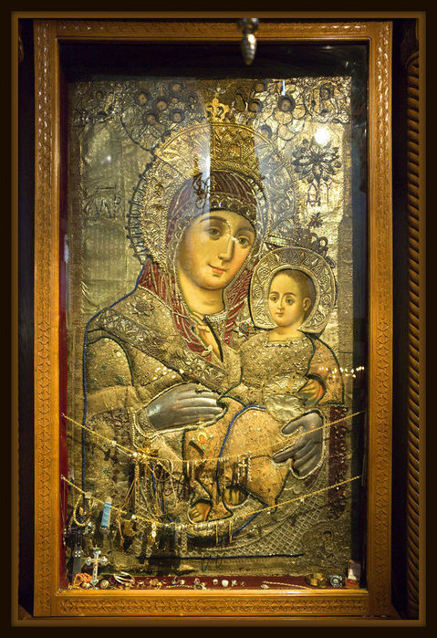

7 01 2013 (1587 дней 21 час назад)
С Рождеством Христовым Абхазия!

7 января весь православный мир отмечает Рождество Христово – в этот день появился на свет Иисус Христос!
Праздник этот древний, и, до революции 1917 - считался гораздо важнее Нового года , поэтому и отмечали его с размахом, и на приметы Рождества обращали самое пристальное внимание.
Приметам в Рождество отводили особое значение, ведь” как Рождество пройдет, так и год задастся”.
Наших современников мало кого интересует урожай проса , но некоторые приметы и обычаи вполне приемлемы.
Что нужно делать на Рождество для привлечения удачи и достатка.
Праздничный ужин на Рождество следует начинать только с появлением первой звезды на небе. Помните – «до первой звезды нельзя!» Ну а дальше надо глядеть во все глаза, чтобы не пропустить ни одной рождественской приметы!
Весь день 7 января лучше всего ходить в гости и принимать гостей. Немаловажно, что общаться надо на Рождество только со светлыми и позитивными людьми, которые могут принести вам счастье.
Рождество – отличное время для покупок, больших и маленьких. Купить что-то хорошее на Рождество – отличная примета и знак того, что покупка долгое время прослужит вам верой и правдой.
На Рождество принято зажигать большое количество свечей, огней, камин – если есть. Свечи привлекут в ваш дом тепло и достаток.
Обязательно надо зажечь особую свечу в Храме - в честь усопших родственников – тогда они вам обязательно помогут в наступающем году, привлекут в дом удачу и достаток.
Если у вас есть домашние животные, на Рождество их надо обильно накормить – тогда год будет сытным, удачным в финансовом плане.
Что нельзя делать на Рождество.
Есть вещи, которые в Рождество делать не стоит – если верить приметам , они могут принести беды в ваш дом.
Если вы решили поразвлечься охотой – делать этого нельзя от Рождества до Крещения (до 19 января). В это время природа покровительствует животным, поэтому убийство животного считается тяжким грехом.
Также в Рождество нельзя убирать дом, стирать и выполнять любую другую тяжелую и грязную работу, а также шить и вязать.
На Рождество нельзя пить воду, поэтому уберите со стола всю минералку. Есть кофе, чай и другие отличные напитки. Примета эта немного странная, но уж лучше воздержаться от питья воды, чем потом весь год мучаться непонятно от чего.
Вифлеемская икона Божией матери

Икона находится в базилике Рождества Христова в Вифлееме, в нескольких метрах справа от спуска в Пещеру Рождества, у стены, в деревянном киоте. Почитается как чудотворная. Это, пожалуй, единственная икона Божией Матери, на которой Она улыбается. Образ был написан в России и передан в Вифлеем императрицей Елизаветой, после того, как она перед ним исцелилась от тяжёлой болезни.
http://www.pravoslavie.ru/smi/37190.htm
http://days.pravoslavie.ru/rubrics/canon255.htm